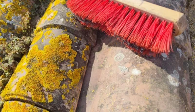

Nettoyage démoussage de toiture à Rochefort
Tarif : à partir de 7 € TTC par m². Devis gratuit et sans engagement.
TVA non applicable, art. 293 B du CGI.
À propos de ce service
Pourquoi et quand nettoyer sa toiture ?
Pour conserver votre toiture en bon état et éviter l'humidité, une vérification et un nettoyage sont recommandés tous les 5 ans environ. Le temps qui passe, la pluie et l'ombre favorisent l'apparition de mousses, lichens et algues. Si ces éléments ne sont pas retirés, ils fragilisent vos tuiles et peuvent entraîner des problèmes d'étanchéité à long terme.
Quel procédé pour nettoyer une toiture ?
Ma priorité est de nettoyer sans abîmer. C'est pourquoi je n'utilise jamais la haute pression. Un nettoyeur haute pression sur une tuile (terre cuite, bêton...) fragilise le revêtement et pousse l'eau là où elle ne devrait pas aller. Je procède à un grattage manuel complet des mousses et lichens sur toute la surface. Je m'assure de retirer les éléments indésirables un par un. C'est plus exigeant, mais cela garantit l'intégrité de votre couverture. De plus le nettoyage des gouttières de tous les débris est systématique et inclus dans la prestation.
Le traitement de la toiture
Après le nettoyage physique, le produit est là pour traiter la racine du problème. Je pulvérise à basse pression un produit fongicide professionnel. Il élimine les spores et les racines invisibles sous 6 à 12 mois. Cette action lente permet non seulement de nettoyer en profondeur, mais aussi de protéger durablement votre toiture. Il ralentit également fortement la réapparition des végétaux et vous assure une tranquillité pour plusieurs années.
Zone d'intervention
J'interviens à Rochefort et dans les alentours, notamment à Échillais, Tonnay-Charente et Saint-Agnant. Contactez-moi pour vérifier la possibilité d'intervention à votre adresse.
Questions fréquentes sur le nettoyage de toiture
Voici les réponses aux questions que mes clients me posent le plus souvent avant une intervention.
À quelle fréquence recommandez-vous le nettoyage et démoussage de toiture ?
Pour maintenir votre toiture en bon état et prévenir les problèmes d'étanchéité dus à l'humidité, une vérification et un nettoyage complet sont généralement recommandés tous les 5 ans environ.
Quelle méthode utilisez-vous pour nettoyer la toiture et les tuiles ?
Ma priorité est de nettoyer sans abîmer. C'est pourquoi je n'utilise jamais la haute pression. Je procède à un grattage manuel complet des mousses et lichens, ce qui garantit l'intégrité de votre couverture. De plus, le nettoyage des gouttières de tous les débris est inclus et systématique.
Quel type de traitement est appliqué après le nettoyage physique du toit ?
Après le nettoyage, je pulvérise à basse pression un produit fongicide professionnel. Ce traitement agit lentement (6 à 12 mois) pour éliminer les spores en profondeur, protégeant ainsi durablement votre toiture contre la réapparition des végétaux.
Intéressé par ce service ?
N'hésitez pas à me contacter si vous avez des questions ou si vous souhaitez prendre rendez-vous. Les devis sont gratuits et sans engagement.